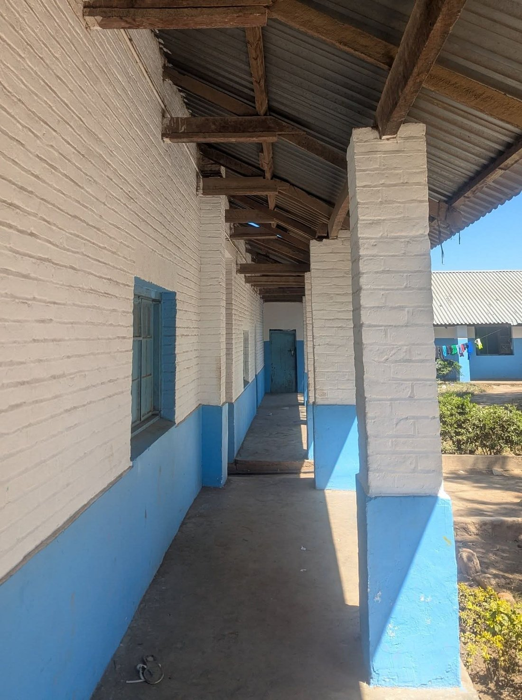
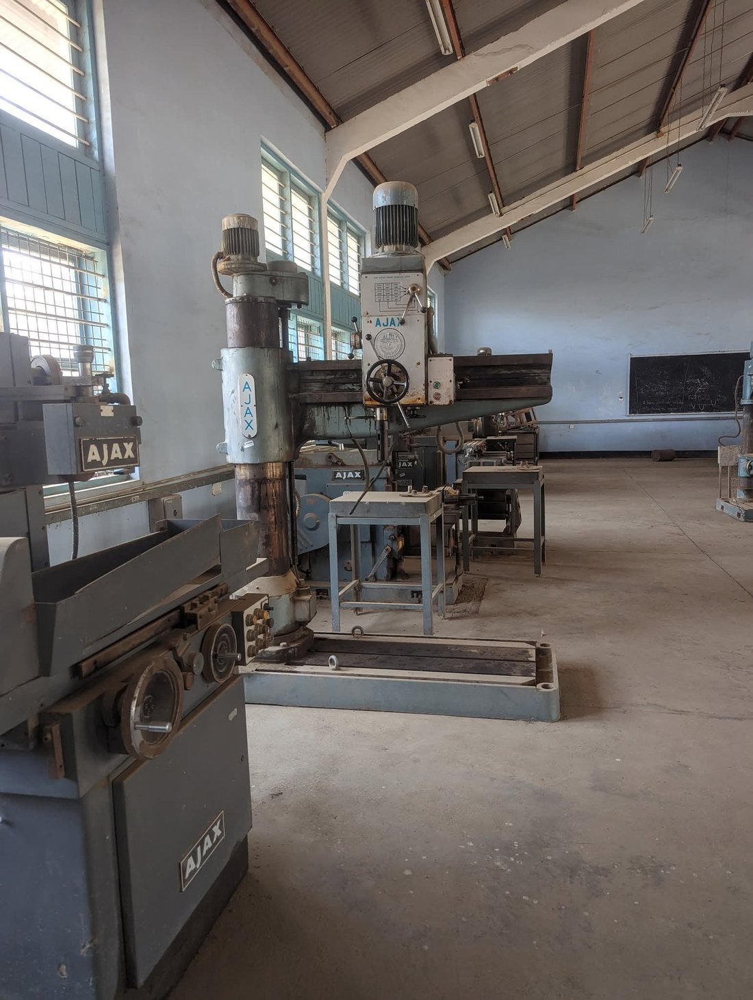
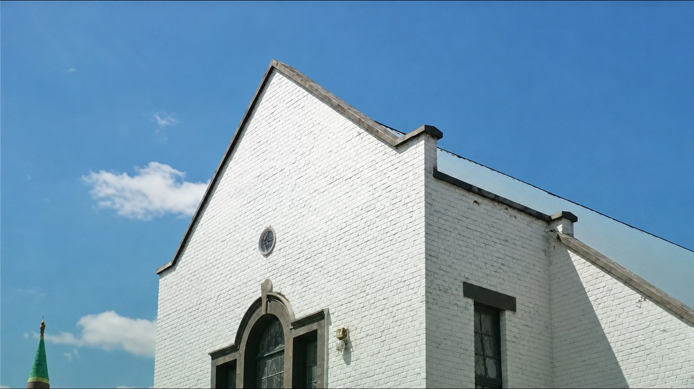
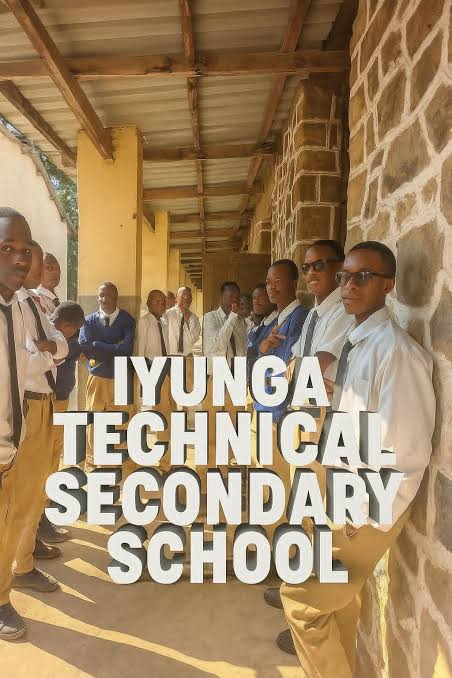
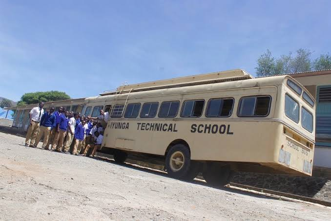
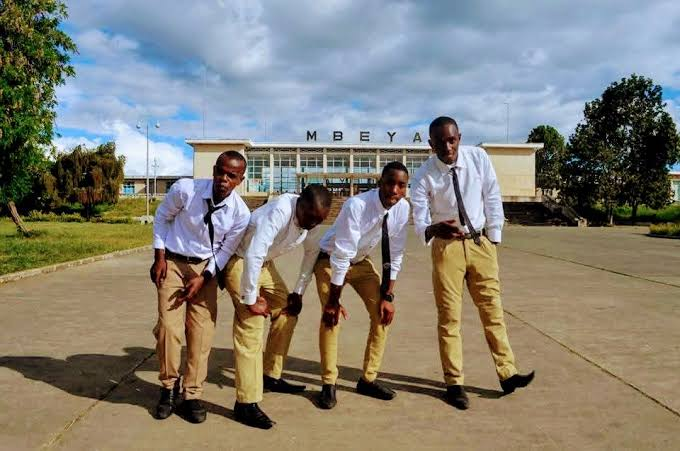
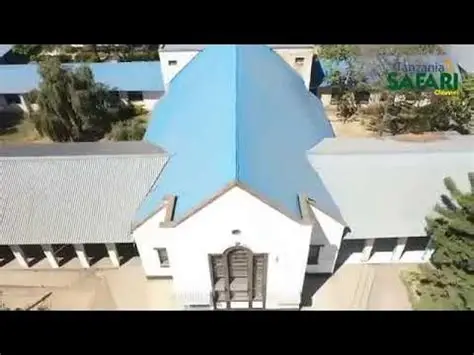

Est. 1925 · Mbeya, Tanzania · NECTA S0112
Iyunga Technical
Secondary School
“Quality Education, Science and Technology”
A boys' boarding school in the Southern Highlands, built on a century of discipline, craftsmanship and academic excellence — from colonial-era classrooms to today's science and technical workshops.
About the school
A century-old institution built for science and technology
Iyunga Technical Secondary School was constructed in 1925 during the German colonial period, and was taken over by the British administration in 1942. It continued operating through Tanzania's independence in 1961 and remains, over a hundred years later, one of Mbeya's most recognisable schools — a stone-and-timber campus that has educated generations of young men from the Southern Highlands and beyond.
The school is administered under the President's Office – Regional Administration and Local Government (RALG), through the Mbeya City Council, and is registered with the National Examinations Council of Tanzania (NECTA) under the code S0112. Its library was developed with support from KOICA, the Korea International Cooperation Agency.
Our Vision
To become a centre of excellence in the provision of quality secondary education, science and technology.
Our Mission
To create a conducive environment for effective teaching and learning, to promote strong academic performance and discipline, and to instil a sense of duty and hard work in staff and students alike.

Classroom block — Iyunga campus, Mbeya
- 1925 Campus built during the German colonial administration.
- 1942 Administration transferred to the British colonial government.
- 1961–Today Operates as a government school under independent Tanzania, now run by Mbeya City Council.
- 100+ yrs Recently marked over a century of continuous science and technical education.
Academics
Ordinary & Advanced Level, with a technical edge
Iyunga offers both O-Level (Form I–IV) and A-Level (Form V–VI) education, sitting the CSEE and ACSEE national examinations. General Studies is compulsory for all A-Level students, alongside a Science or Arts subject combination.
Science Combinations
- PCM Physics, Chemistry, Mathematics
- PCB Physics, Chemistry, Biology
- PGM Physics, Geography, Mathematics
- EGM Economics, Geography, Mathematics
- CBG Chemistry, Biology, Geography
- CBA Chemistry, Biology, Agriculture
- CBN Chemistry, Biology, Food & Human Nutrition
Arts Combinations
- HGL History, Geography, English
- HGK History, Geography, Kiswahili
- HKL History, Kiswahili, English
- KLF Kiswahili, English, French
- ECA Economics, Commerce, Accountancy
- HGE History, Geography, Economics
Technical & Workshop Training
True to its name, Iyunga maintains working technical/mechanical workshops on campus — fitted with metalworking machinery such as drilling and lathe machines — where students get hands-on practice in technical and vocational skills alongside the standard academic curriculum, in line with the school's science-and-technology mission.

Inside the technical workshop
Gallery
Life at Iyunga
A look around campus — the buildings, the workshops, and the students who carry the school's century-long legacy forward.







